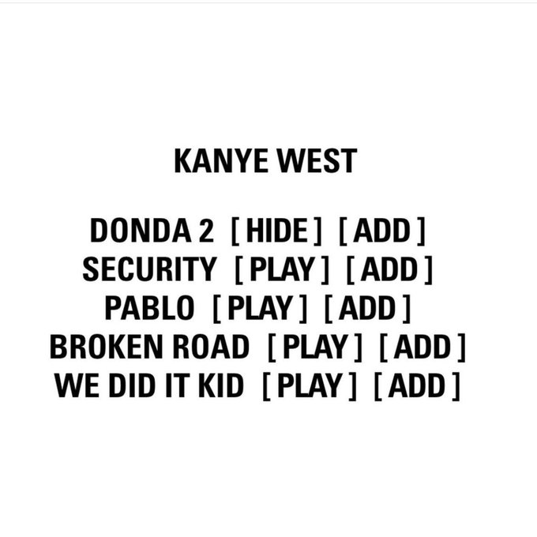

Donda 2: XXXTENTACION, tem a participação em 2 sons do album
| Tizzle News
O rapper Kanye West liberou nesta quarta-feira (23) seu novo álbum de estúdio chamado DONDA 2. O
projeto conta com participações de XXXTENTACION, Future, Travis Scott e mais, e está disponível
apenas na plataforma do Stem Player. Apesar de muitos acreditarem que as faixas estariam de graça
para ouvir na plataforma, isso não aconteceu. Apenas quem comprou o aparelho que custa 200 dólares
(cerca de mil reais) poderá ouvir o novo disco do rapper americano.
Kanye West, ou como ele agora é conhecido, Ye, cortou os laços com a Apple completamente e decidiu
lançar seu álbum por conta própria. Parece que esta decisão está funcionando bem para o ícone
cultural. Na semana passada, o artista anunciou que a aguardada sequência do mega-álbum DONDA, seria
lançada exclusivamente por meio de sua plataforma Yeezy Stem Player. “Hoje os artistas recebem
apenas 12% do dinheiro que a indústria ganha. É hora de libertar a música desse sistema opressivo. É
hora de assumir o controle e construir o nosso próprio”, disse Ye, focado em inovação e exploração.
Mais tarde, ele explicou com um pouco mais de detalhes como o novo sistema funcionaria: “DONDA 2
será transmitido apenas na minha própria plataforma, o stem player. Você pode baixar novas músicas
em stemplayer.com. Você pode tocar 4 elementos diferentes da faixa: vocais, bateria, baixo e música.
Também possui um MP3 player Atualmente temos 67.000 disponíveis e estamos fazendo 3.000 por dia.
Clique no link na minha bio para comprar.”
Desde então, a equipe de Yeezy terminou um acordo de patrocínio com a Apple e procurou novos meios
de transmitir o próximo evento ao vivo DONDA EXPERIENCE. Poucos dias depois, os números das compras
do primeiro item da Yeezy Tech, o Yeezy Stem Player, foram solidificados. Ye postou os números com a
legenda: “Para ganhar os US$ 2,2 milhões que ganhamos no primeiro dia no player, o álbum teria que
ser transmitido 500 milhões de vezes. Stemplayer, mesmo sem o álbum ter sido lançado, fez a gente
ganhar mais do que com o álbum sendo lançado em streaming.”
Até o momento apenas quatro faixas estão disponíveis na plataforma, são as faixas “Security”,
“Pablo”, “Broken Road” e ‘We Did It Kid’. Como dissemos anteriormente, você pode ouvir apenas se
tiver adquirido o Stem Player. Confira abaixo.
